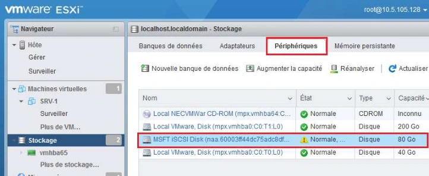
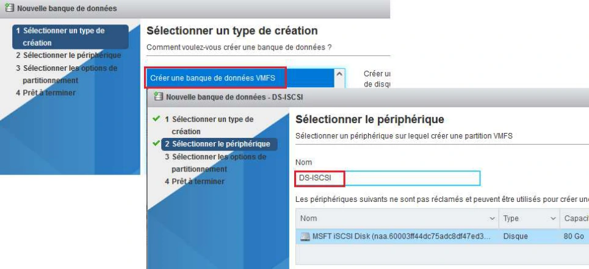
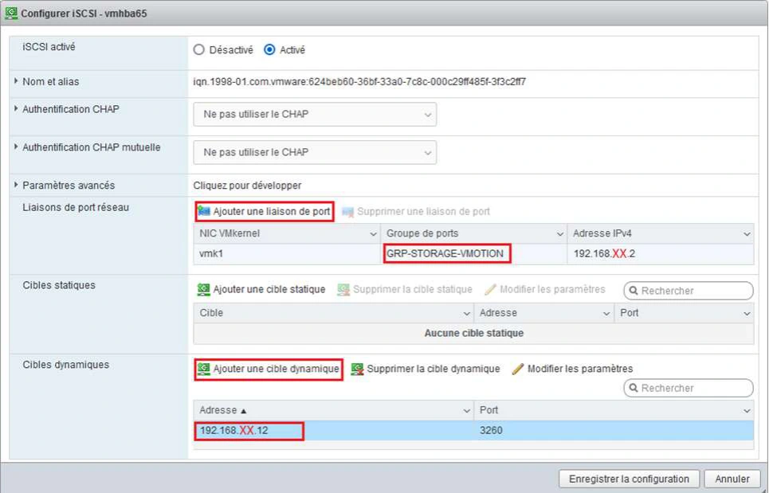

Module 07 — Gestion du stockage¶
La transcription du support Drive et l’aide pédagogique sont séparées pour rendre leur provenance explicite.
SOURCE DRIVE · TRANSCRIPTION DU SUPPORT
Le contenu des documents du dossier TSSR est transcrit ci-dessous, page par page. Les textes et tableaux sont intégrés à la page Web. Aucun fichier PDF, aucune diapositive entière ni aucune reproduction de page n’est affiché. Seuls des croquis ou visuels isolés et vérifiés peuvent accompagner la transcription. Les versions et les consignes restent celles des supports de formation. Les compléments IA sont conservés dans leur onglet distinct.
Support · Module 07 - Support de cours · 14 pages transcrites
Module 07 – Gestion du stockage
Gestion du stockage
Objectifs
- Configurer le stockage local ou partagé
Gestion du stockage
Les solutions de stockage
Les solutions de stockage
Terminologie
| Terme | Définition et exemple(s) de solution(s) |
|---|---|
| Mode bloc | Le stockage en mode bloc rassemble les données en blocs qui sont stockés en tant qu’éléments séparés. Chaque bloc de données se voit attribuer un identifiant unique, qui permet au système de stockage de conserver les petits éléments à l’emplacement le plus pratique. |
| SAN | Un réseau de stockage ou SAN (Storage Area Network) est un réseau spécifiquement dédié à l’interconnexion de ressources de stockage en mode bloc avec des serveurs. Il permet à un serveur d’accéder à des ressources de stockage distantes comme s’il s’agissait d’un disque dur local. Lorsqu’un hôte désire accéder à des données sur une baie de stockage SAN, il lui suffit d’envoyer la commande SCSI appropriée et les informations lui seront retournées via le réseau. |
| NAS | L’acronyme NAS, pour Network Attached Storage, désigne un périphérique de stockage utilisé pour le stockage et le partage de fichiers via un réseau (Ethernet ou de type WAN la plupart du temps). Il s’agit d’un serveur de fichiers capable de fonctionner de façon autonome. |
Les solutions de stockage
Services et données
- Une infrastructure regroupe un ensemble de services fournis
- Ceux-ci sont dépendants de données pour leur fonctionnement
Question
Service
Requête
Contenu
Donnée
Réponse
MIB
- Les données sont au cœur du fonctionnement de chaque service
- Et les services au cœur des infrastructures réseau
Les solutions de stockage
Stockage local et accès aux données
- Lorsqu’une machine dispose d’un périphérique de stockage local, l’accès aux données sur ce périphérique est lié :
- À la connectique associée au périphérique
- Au protocole de stockage pris en charge
- Au mode d’accès
Ces trois éléments sont généralement liés entre eux.
Périphérique Hôte
Application
OS
Protocole – Lien Transport
Connectique - Physique
Les solutions de stockage
Périphériques disques et modes d’accès
- Les périphériques de type disque stockent les données sous forme d’ensembles ou blocs.
Périphérique Hôte
Écriture
OS
Lecture
Les solutions de stockage
Le protocole SCSI
- Le mode bloc s’applique au protocole SCSI
Périphérique Hôte
Périphérique Hôte
Application
Pilote disque SCSI
OS
OS
Protocole – Lien Transport
Protocole – SCSI
Connectique - Physique
Contrôleur SCSI
- Les données échangées par les couches liaison / transport comportent :
Périphérique Hôte
- Des commandes SCSI
- Des blocs de données
Données
Commandes SCSI
Les solutions de stockage
Les limites du stockage local
- Le stockage local présente des limites :
- Chaque serveur allouera de l’espace disque à la tolérance de panne
- Les volumes disques sont créés en fonction des besoins et des contraintes matérielles
- Les sauvegardes impactent les performances de toutes les machines qui y sont soumises
- Une distance limitée entre un serveur et son stockage
- La réponse aux problématiques précédentes : mise en place de solution de stockage centralisé / mutualisé
- Une solution de stockage réseau est caractérisée par :
- Son type d’accès : mode bloc ou mode fichier
- Le(s) protocole(s) d’accès pris en charge
Les solutions de stockage
SAN / NAS
SAN
NAS
Les baies SAN utilisent des protocoles d’accès comme Fibre Channel ou iSCSI et partagent leur capacité sous la forme de volumes logiques. Ces derniers sont utilisables comme des disques locaux par les serveurs et sont donc accessibles en mode bloc. Les baies NAS mettent quant à elles leur capacité disponible à disposition des serveurs sous la forme d’un partage réseau accessible via un protocole de partage de fichiers en réseau comme NFS ou CIFS (le protocole de partage de fichiers en réseau de Windows aussi connu sous le nom SMB). Un réseau de stockage se différencie des autres systèmes de stockage tels que le NAS (Network Attached Storage) par un accès bas niveau aux disques. Pour simplifier. C'est une mutualisation des ressources de stockage.
Dans le cas du NAS, la ressource de stockage est directement connectée au réseau IP de l'entreprise. Le serveur NAS intègre le support de multiples systèmes de fichiers réseau, tels que Common Internet File System (CIFS), protocole de partage de Microsoft et de Samba, Network File System (NFS), qui est un protocole de partage de fichiers Unix, ou encore AFP (AppleShare File Protocol), qui est l'équivalent pour la technologie Apple. Une fois connecté au réseau, il peut jouer le rôle de plusieurs serveurs de fichiers partagés.
Les solutions de stockage
L’iSCSI
- Le protocole iSCSI est utilisé par des solutions de stockage centralisées rendant accessible de l’espace disque en mode bloc par un réseau.
Périphérique Hôte
Données
TCP-
Réseau
iSCSI Initiator
IP
iSCSI
Commandes SCSI
iSCSI Target
Réseau de
stockage
Adaptateur iSCSI
iSCSI Initiator
iSCSI Target
D’autres protocoles
(présentés
ultérieurement) ont une
approche similaire.
Gestion du stockage
vSphere et le stockage
vSphere et le stockage
Les composantes de stockage
Dans une infrastructure vSphere, on distingue deux composantes de configuration du stockage :
- Les adaptateurs de stockage servent à lier des solutions de stockage aux hôtes amenés à les utiliser
- Les banques de données ou datastores correspondent aux conteneurs « virtuels » dans lesquels sont hébergées les données
vSphere et le stockage
Les composantes de stockage
- De nombreuses possibilités sont prises en charge pour l’hébergement des machines virtuelles dans l’environnement vSphere
- Les points suivants vous permettront de cibler la solution de stockage la plus adaptée à une situation donnée :
- Stockage dédié à un hôte ou mutualisé
- Quel protocole d’accès à la solution de stockage
- Quel support
- Quel mode d’accès
- Quel système de fichiers utiliser
La diapositive suivante
illustre ces différents
aspects
vSphere et le stockage
Choix d’une solution de stockage
Stockage dédié
Stockage mutualisé
FC
FCOE
iSCSI
NFS
DAS
Protocole
SAS
SCSI SATA
HBA
CNA FCOE
Adaptateur virtuel FCOE
HBA iSCSI
Adaptateur virtuel iSCSI
Réseau
Connectique
FC
Support
fibre
cuivre
Réseau
VMFS3
VMFS5
Formatage par l’hôte
Gestion du stockage
Les adaptateurs de stockage
Les adaptateurs de stockage
Raccordement de la solution de stockage
- La solution de stockage retenue est raccordée à l’infrastructure vSphere via la configuration des adaptateurs de stockage
- Sont affichés dans les adaptateurs de stockage :
- Les disques physiques raccordés directement à l’hyperviseur
- Les espaces disques accessibles via des adaptateurs HBA ou CNA physiques configurés sur l’hyperviseur
- Les espaces disques accessibles via des adaptateurs logiciels de l’hyperviseur
- L’environnement vSphere fournit des adaptateurs virtuels FCoE et iSCSI pour les hôtes.
- L’utilisation de ces adaptateurs se traduit par un impact sur les performances des hôtes, les adaptateurs matériels sont donc à privilégier.
- Dans le cas d’utilisation d’une solution nécessitant un adaptateur de stockage virtuel, celui-ci est à configurer depuis l’hôte.
Les adaptateurs de stockage
Zoom sur l’iSCSI
- L’utilisation de solutions de stockage basées sur le protocole iSCSI est fréquente dans des environnements virtualisés. Les performances du réseau associé sont alors directement liées au bon fonctionnement de la solution.
- Il est recommandé d’utiliser un réseau dédié à ses besoins (et de préférence des mécanismes de redondance).
- Le ciblage d’une carte réseau pour le protocole iSCSI permet de dédier cette carte à ce besoin. Celui-ci se configure depuis les propriétés de l’adaptateur iSCSI. La résultante de cette configuration est visible dans les propriétés du vSwitch lié à la carte sélectionnée.
Hôtes et MTU
L’utilisation de trames Ethernet pour véhiculer des flux liés au stockage nécessite une adaptation de la configuration du réseau afin de limiter la charge CPU et d’améliorer les performances globales de la solution.
Si les équipements de réseau utilisés pour les flux iSCSI le permettent (prise en charge de bout en bout), il est recommandé d’augmenter la valeur du MTU à 9000.
Les adaptateurs de stockage
iSCSI en environnement vSphere
iSCSI Initiator
iSCSI Target
SAN iSCSI
Illustration des éléments constitutifs d’une solution de stockage iSCSI
ESXi
HBA logiciel
+
Carte réseau
Réseau
LUN0
de stockage
LUN1
HBA physique
SAN
Storage Area Network : le réseau de stockage qui est caractérisé par son (ses) protocole(s) d’accès et connectivité, sa volumétrie, ses fonctionnalités associées, ses performances
LUN
Logical Unit Number : unité de stockage d’une baie de disques
HBA
Host Bus Adapter : adaptateur de stockage qui (une fois configuré) permettra l’accès à un ou plusieurs espaces disques
iSCSI Target
L’élément qui met à disposition de l’espace disque physique
iSCSI Initiator
L’élément qui accède à de l’espace disque mis à sa disposition
Gestion du stockage
Les banques de données
Les banques de données
Les datastores
- On dispose généralement de plusieurs espaces disques disponibles et accessibles depuis leur adaptateur de stockage associé.
- Les banques de données (ou datastores) vont rendre utilisables ces espaces disques.
- Avant leur création, il est important de recenser les besoins en termes de stockage et les caractéristiques attendues pour les espaces correspondants.
| Besoins | VM_PROD | VM_TESTS | MODELES | ISO |
|---|---|---|---|---|
| Performances | 3 | 2 | 1 | 1 |
| Tolérance aux pannes | 3 | 2 | 2 | 1 |
| Criticité | 3 | 2 | 2 | 1 |
- Des valeurs élevées pour les différents indices sont généralement associées à un coût élevé de l’hébergement.
Les banques de données
La configuration des banques de données
- On distingue 3 types de banques de données :
- VMFS
- RDM avec VMFS
- NFS
- Caractéristiques et versions de systèmes de fichiers VMFS :
| VMFS 2 | VMFS3 | VMFS5 | VMFS6 | |
|---|---|---|---|---|
| Versions de vSphere prises en charge | ESX 2 | Virtual Infrastructure 3, vSphere 4.x et vSphere 5.x | vSphere 5 et supérieur | vSphere 6.5 et supérieur |
| Volume maximal | 2 To | 2 To | 64 To / Defrag Manu | 64 To / Defrag Auto |
| Format de la table de partitions | MBR | MBR | GPT | GPT |
| Taille des blocs | 1/2/4/8 Mo | 1/2/4/8 Mo | 1 Mo | 1 Mo |
- VMFS est un système de fichier qui permet un accès concurrentiel en lecture et écriture à un ensemble d’hôtes.
Les banques de données
Gestion des banques de données
Les principales tâches de gestion des banques de données sont :
- Création et formatage
- Suivi de son taux d’utilisation
- Extension dynamique
- Parcours, import et export de données
- Démontage
Affichage des fichiers masqués
Tous les fichiers ne sont pas visibles depuis l’outil d’exploration, ils peuvent l’être depuis la console de l’ESXi ou après s’y être connecté via ssh, au moyen de la commande ls
Gestion du stockage
Les disques de VM
Les banques de données
VMDK ou RDM
- Dans la plupart des cas, les disques présentés aux machines virtuelles sont au format VMDK qui apporte plus de simplicité de gestion et de sauvegarde. Ce format limite cependant à 2 To la taille maximale d’un espace disque.
- Le format RDM peut être nécessaire dans certains contextes :
- Utilisation de solutions liées au SAN pour répondre à certains besoins (sauvegarde…)
- Utilisation des services de cluster Microsoft
- L’écart de performance entre les 2 formats est peu significatif
Les banques de données
La mise à disposition d’espace disque aux VM
- L’espace disque accessible aux hôtes est principalement destiné à être utilisé par les machines virtuelles qu’il héberge
- Deux possibilités permettent de fournir de l’espace disque à une machine virtuelle :
VM
SAN
Disque virtuel
- L’utilisation de disques au format VMDK
- Le mappage d’espace disque en accès direct (Raw Device Mapping)
RDM
LUN0
Disque virtuel
VMDK
LUN1
Datastore
Storage Adapters
Les banques de données
Création d’un disque VMDK
Lors de la création d’un disque virtuel au format VMDK, 2 types de provisionnements sont proposés :
- Thick provision
- Thin provision
| Thick provisioning | Thin provisioning | |
|---|---|---|
| Provisionnement | Définitif / statique | À la demande / dynamique |
| Espace disque occupé | Le disque créé occupera dès sa création tout l’espace indiqué | La taille réelle du disque correspond à l’espace maximum occupé sur le disque. Le disque pourra au maximum atteindre l’espace indiqué |
| Avantages | Performances supérieures | Création du disque instantanée. L’espace non utilisé n’est pas bloqué et peut être utilisé |
| Inconvénients | Temps de création du disque | Risque de surallocation d’un datastore |
Référence du document : 1hTZrrkSiiZZbh4X_Nn8i3Awkhjy--_N3 · SHA-256 bf5cf430bbe885c2…
Énoncé · TSSR110-Virtualisation_Mise en Situation - Module 7 - Gestion Stockage · 4 pages transcrites
Énoncé :
Atelier N°5
TP du Module 07 – Gestion du stockage d’une infrastructure vSphere
Avant de démarrer ce TP, il convient d’avoir suivi les prérequis du Module 7.
Durée estimée
2 à 3 heures
Objectif :
Mettre en œuvre et configurer les services NFS et iSCSI
Gérer des banques de données
Prérequis :
Disposer de deux hyperviseurs ESXi fonctionnels, avec la configuration réseau adéquate (Atelier 3 et 4 réalisés)
Disposer de la machine virtuelle « SRV_2K19 », le système d’exploitation Windows Server 2019 doit y être déployé (Atelier 1 réalisé)
Énoncé :
Cet atelier nécessitera les 2 hyperviseurs ESXi ainsi que la machine virtuelle « SRV_2K19 ». Cette dernière jouera le rôle de serveur NAS, et fournira à la fois les services de partage de fichiers NFS et de cible iSCSI.
Sur la machine virtuelle SRV_2K19
- Revenir impérativement au snapshot « Fin Atelier 1 ».
- Démarrer la VM.
- Passer en adressage IP statique la carte « ethernet0 » et lui affecter : 192.168.XX.12 / 24.
- Contrôler la connectivité réseau avec les VMkernel des hyperviseurs ESXi :
ping 192.168.XX.1ping 192.168.XX.2I-Mise en œuvre du protocole iSCSI (accès espace stockage en mode bloc)
Sur l’hyperviseur ESXi1
- A partir du menu « Stockage », activer l’adaptateur de stockage iSCSI logiciel.
- En modifier la configuration afin de le lier au groupement de port GRP-STORAGE- VMOTION créé dans l’atelier précédent et ajouter l’adresse IP de SRV_2K19 dans « Cible Dynamique ».
Sur la machine virtuelle SRV_2K19
- Ajouter un 2ème disque dur de 150 Go, le formater et le nommer « STOCKAGE ».
- Créer un point d’arborescence sur le volume « STOCKAGE » de la sorte :
- Ajouter le sous-service de rôle « Services de fichiers » nécessaire à la création de la cible (Serveur cible iSCSI).
- Dans le menu adéquat du Gestionnaire de serveurs, procéder à l’ajout d’une cible iSCSI de 80 Go, nommée « LUN1 ».
- Déclarer l’initiator ESXi1et ESXi2 par leurs adresses IP, pour leur permettre de se connecter à la cible iSCSI.
Sur l’hyperviseur ESXi1
- Valider, si cela n’est pas déjà fait, la configuration de l’adaptateur iSCSI.
- Pour terminer la configuration, lancer une réanalyse des adaptateurs de stockage afin de détecter la cible iSCSI.
- Dans l’onglet « Périphériques », si la configuration a bien été opérée, un nouveau périphérique « MSFT iSCSI » doit faire son apparition. Sur SRV_2K19, le mot « connecté » doit apparaitre sur la cible iSCSI.
- Créer une nouvelle banque de données VMFS nommée : « DS-ISCSI » basée sur LUN1 dont vous utiliserez l’intégralité de l’espace de stockage.
Sur l’hyperviseur ESXi2
- Configurer l’adaptateur iSCSI logiciel afin qu’il accède à LUN1.
- Vérifier que le datastore « DS-ISCSI » est bien accessible à l’issue de la configuration.
II-Mise en œuvre du partage de fichiers NFS (accès espace stockage en mode fichiers)
Sur la machine virtuelle SRV_2K19
- Créer un sous-dossier nommé « NFS » dans le dossier « DS » sur le volume « STOCKAGE ».
- Ajouter le service de rôle nécessaire à la mise en œuvre de partages NFS (Serveur pour NFS).
- Dans le menu adéquat du Gestionnaire de serveurs, procéder à la configuration d’un partage NFS du dossier « DS\NFS » avec les paramètres suivants :
- Pas d’authentification serveur
- Activer l’accès des utilisateurs non mappés
- Autoriser les hyperviseurs avec leurs adresses IP en lecture et écriture
- Version NFS3
Sur les hyperviseurs ESXi1 et 2
- Configurer un nouveau datastore nommé « DS-NFS » de type « Montage NFS » pointant vers le partage précédemment créé.
- Constater l’apparition d’un nouvel élément dans l’inventaire des banques de données.
Schéma récapitulatif :
Référence du document : 1x7evCXIUC0fFnd-eL-8XY-Er1xPU54J2 · SHA-256 e89ce872e1ddb757…
Correction · TSSR110-Virtualisation_Mise en Situation - Module 7 - Gestion Stockage - Solution · 17 pages transcrites
Correction originale : à consulter après avoir tenté l’exercice.
Solutions :
Atelier N°5
TP du Module 07 – Gestion du stockage d’une infrastructure vSphere
Avant de démarrer ce TP, il convient d’avoir suivi les prérequis du Module 6.
Durée estimée
2 à 3 heures
Objectif :
Mettre en œuvre et configurer les services NFS et iSCSI
Gérer des banques de données
Prérequis :
Disposer de deux hyperviseurs ESXi fonctionnels, avec la configuration réseau adéquate (Atelier 4 réalisé)
Disposer de la machine virtuelle « SRV_2K19 », le système d’exploitation Windows Server 2019 doit y être déployé (Atelier 1 réalisé)
Énoncé :
Cet atelier nécessitera les 2 hyperviseurs ESXi ainsi que la machine virtuelle « SRV_2K19 ». Cette dernière jouera le rôle de serveur NAS, et fournira à la fois les services de partage de fichiers NFS et de cible iSCSI.
Sur la machine virtuelle SRV_2K19
- Revenir impérativement au snapshot « Fin Atelier 1 ».
- Démarrer la VM
- Passer en adressage IP statique la carte « ethernet0 » et lui affecter : 192.168.XX.12 / 24
- Contrôler la connectivité réseau avec les VMkernel des hyperviseurs ESXi :
ping 192.168.XX.1ping 192.168.XX.2I-Mise en œuvre du protocole iSCSI (accès espace stockage en mode bloc)
Sur l’hyperviseur ESXi1
- A partir du menu « Stockage », activer l’adaptateur de stockage iSCSI logiciel
- En modifier la configuration afin de le lier au groupement de port GRP-STORAGE- VMOTION créé dans l’atelier précédent. Ajouter l’adresse IP de SRV_2K19 dans « Cible Dynamique ».
- Configurer l’adaptateur logiciel iSCSI comme suit :
Sur la machine virtuelle SRV_2K19
- Ajouter un 2ème disque dur de 150 Go, le formater et le nommer « STOCKAGE ».
- Créer un point d’arborescence sur le volume « STOCKAGE » de la sorte :
- Utiliser la solution de l’atelier 2 pour configurer un nouveau volume sur un système
Windows Server 2019
- Ajouter le sous-service de rôle « Services de fichiers » nécessaire à la création de la cible (Serveur cible iSCSI)
- Dans le menu adéquat du Gestionnaire de serveurs, procéder à l’ajout d’une cible iSCSI de 80 Go, nommée « LUN1 ».
- Une fois cliqué le lien en bleu « To create an iSCSI… », un assistant s’éxécute.
Commencer par déclarer l’emplacement du disque virtuel :
- Donner un nom au disque virtuel
- Indiquer la taille du disque (80 Go)
- Assigner le disque virtuel à une nouvelle cible iSCSI
- Donner un nom à la cible iSCSI
- Déclarer l’initiator ESXi1et ESXi2 par leurs adresses IP, pour leur permettre de se connecter à la cible iSCSI.
- Conserver tous les autres paramètres par défaut jusqu’à créer la cible iSCSI.
- Ajouter ESXi2 comme deuxième initiator sur la cible iSCSI si vous ne l’avez pas fait
auparavant.
Sur l’hyperviseur ESXi1
- Valider, si cela n’est pas déjà fait, la configuration de l’adaptateur iSCSI.
- Pour terminer, lancer une réanalyse des adaptateurs de stockage afin de détecter la cible iSCSI.
- Dans l’onglet « Périphériques », si la configuration a bien été opérée, un nouveau périphérique « MSFT iSCSI » doit faire son apparition. Sur SRV_2K19, le mot « connecté » doit apparaitre sur la cible iSCSI.
- Cela donne dans l’onglet « Périphériques » :
- Cela donne ceci sur la VM SRV_2K19 :
- Créer une nouvelle banque de données VMFS nommée : « DS-ISCSI » basée sur LUN1 dont vous utiliserez l’intégralité de l’espace de stockage.


- Un assistant de création s’ouvre, faire les choix suivants :
- Conserver les choix par défaut jusqu’à la fin de l’assistant
- Vous devez obtenir ceci dans « Banques de données » :


Sur l’hyperviseur ESXi2
- Ajouter et configurer un adaptateur iSCSI logiciel afin qu’il accède à LUN1
- Configurer l’adaptateur logiciel iSCSI comme suit :
- Vérifier que le datastore DS-ISCSI est bien accessible


Informations dans les visuels du support
- Dans Stockage, onglet Banques de données, vérifier que DS-ISCSI et DS-Local sont présents.
- La capture affiche des périphériques Non-SSD, avec des capacités respectives de 79,75 Go et 199,75 Go et un espace provisionné de 1,41 Go et 37,92 Go.
I-Mise en œuvre du partage de fichiers NFS (accès espace stockage en mode fichiers)
Sur la machine virtuelle SRV_2K19
- Créer un sous-dossier nommé « NFS » dans le dossier « DS » sur le volume « STOCKAGE ».
- Ajouter le service de rôle nécessaire à la mise en œuvre de partages NFS (Serveur pour NFS)
- Dans le menu adéquat du Gestionnaire de serveurs, procéder à la configuration d’un partage NFS du dossier « DS\NFS » avec les paramètres suivants :
- Pas d’authentification serveur
- Activer l’accès des utilisateurs non mappés
- Autoriser les hyperviseurs avec leurs adresses IP en lecture et écriture
- Version NFS3
- Depuis le Gestionnaire de fichiers, se rendre dans le menu « Shares »
- Lancer l’assistant en cliquant sur le lien bleu en plein milieu « To create a file
share… »
- Indiquer l’emplacement du point de partage NFS
- Indiquer les paramètres d’autorisation de connexion comme suit :
- Autoriser les hyperviseurs à se connecter en lecture/écriture
- Conserver les autres paramètres par défaut et créer le partage.
Sur les hyperviseurs ESXi1 et 2
- Configurer un nouveau datastore nommé « DS-NFS » de type « Montage NFS » pointant vers le partage précédemment créé.
- Nous obtenons ceci au final :
Bonus
Référence du document : 1bWt1c8_qTFwZyz7loW2ak55FPKbG44m4 · SHA-256 854e1126b15bc9ce…
Complément IA / externe au cours — fiche pédagogique du portail
Cette fiche contient une reformulation et des aides d’apprentissage rédigées par IA. Elle est distincte de la transcription des documents du Drive et ne la remplace pas. Les schémas de synthèse de cette fiche sont des illustrations IA / externes au cours, sauf les captures explicitement attribuées à un document source.
Le même serveur Windows fournit deux chemins de stockage aux ESXi. En iSCSI, les hôtes voient un disque présenté à travers le réseau et utilisent une banque VMFS. En NFS, ils montent directement un partage de fichiers.
Objectifs¶
- Distinguer accès bloc, accès fichier, SAN et NAS.
- Identifier initiateur, cible, LUN, système de fichiers et datastore.
- Choisir les repères de provisionnement d’un disque de VM.
- Configurer les deux banques partagées du TP et vérifier leur accès depuis les deux hôtes.
1. Partir du mode d’accès¶
| Notion | Ce qu’elle désigne |
|---|---|
| Accès bloc | Accès à des blocs de données, notamment avec des commandes SCSI. |
| SAN | Réseau qui fournit des unités de stockage en mode bloc, par exemple en Fibre Channel ou iSCSI. |
| NAS | Service de fichiers partagé sur le réseau, notamment en NFS ou CIFS/SMB. |
| iSCSI | Transport de commandes SCSI et de données sur IP. |
| Initiateur iSCSI | Adaptateur ou logiciel qui demande l’accès au stockage. |
| Cible iSCSI | Service qui expose le stockage aux initiateurs autorisés. |
| LUN | Unité logique de stockage présentée par la cible ou la baie. |
| HBA ou CNA | Adaptateurs matériels de stockage ou convergents cités par le cours. |
Le stockage local dépend de la capacité et de la tolérance aux pannes de chaque serveur. Les opérations de sauvegarde peuvent peser sur ses performances. La mutualisation facilite l’accès de plusieurs hôtes à une capacité commune. Le protocole, le réseau, le matériel et le système de fichiers déterminent ensuite le chemin d’accès.
Pour iSCSI, le support conseille un réseau dédié et, si possible, redondant. Le MTU de 9000 n’a de sens que si les équipements et les interfaces du chemin le supportent. Le TP réutilise le réseau configuré à l’atelier précédent.
2. Du périphérique à la banque de données¶
Un stockage DAS est directement rattaché à l’hôte. Le support montre notamment des connexions SAS, SCSI et SATA. Sur un stockage mutualisé, comparer Fibre Channel, FCoE, iSCSI et NFS selon le support physique, la connectique et le mode d’accès. L’inventaire des adaptateurs d’un ESXi regroupe les disques raccordés, les espaces accessibles via HBA ou CNA matériels et ceux accessibles via des adaptateurs logiciels. Les exemples du cours comprennent des adaptateurs logiciels FCoE et iSCSI. Leur traitement consomme des ressources de l’hôte, à prendre en compte dans le dimensionnement.
Une banque de données, ou datastore, est un espace géré par vSphere pour les fichiers de VM, modèles et images ISO. Dans l’atelier, la banque VMFS est créée au-dessus du LUN iSCSI. La banque NFS référence un export de fichiers. Deux hôtes qui accèdent au même LUN doivent retrouver la même banque VMFS, sans initialiser deux fois le périphérique.
Illustration IA / externe au cours — les deux chemins du laboratoire.
Le cours cite VMFS, NFS et le mappage RDM associé à VMFS. VMFS prévoit l’accès simultané de plusieurs hôtes à une banque partagée. Le tableau historique compare VMFS 2, 3, 5 et 6, avec VMFS 6 associé à vSphere 6.5 et supérieur. Les limites dépendent de la version et du type d’objet mesuré. Capacités VMFS
3. Choisir et surveiller l’espace¶
| Choix | Fonctionnement | Contrôle |
|---|---|---|
| VMDK | Les données d’un disque de VM sont stockées dans des fichiers | Vérifier la capacité maximale du disque virtuel et la place sur la banque. |
| RDM | La VM utilise un mappage vers un périphérique de stockage | Vérifier le besoin, notamment pour un scénario SAN ou cluster. |
| Thick | L’espace demandé est réservé lors de la création | Vérifier la capacité restante et le mode d’initialisation choisi. |
| Thin | L’espace physique consommé progresse jusqu’à la limite définie | Suivre le taux de remplissage et prévoir une extension avant saturation. |
La limite de 2 To mentionnée dans le support est un repère historique. Vérifier la version et le contexte avant d’appliquer une limite ou une conclusion de performance. VMDK de plus de 2 To
Pour administrer une banque, prévoir les tâches décrites dans le support. Créer ou formater, surveiller l’utilisation, étendre si la configuration le permet, parcourir les fichiers, importer, exporter puis démonter lorsque la banque n’est plus utilisée. Le support cite ls dans la console ou après une connexion SSH pour certains fichiers masqués dans le navigateur. Réserver l’accès à la console au cadre d’administration prévu.
4. TP guidé — Partager une banque iSCSI et une banque NFS¶
Durée du support. Deux à trois heures. Prévoir les deux ESXi et leurs interfaces VMkernel de stockage, ainsi que la VM SRV_2K19.
A. Préparer le serveur Windows et vérifier le réseau¶
- Revenir au snapshot de fin d’atelier 1 de
SRV_2K19. Cette opération remplace son état courant dans le laboratoire. - Démarrer la VM et attribuer l’adresse de stockage prévue, représentée par
192.168.XX.12/24. Les deux VMkernel ont des adresses distinctes du même sous-réseau. - Tester le ping depuis Windows vers chacun des deux VMkernel. Une absence de réponse impose de vérifier le réseau, l’adressage et le filtrage avant de configurer les partages.
- Ajouter le disque de 150 Go et créer le volume
STOCKAGE. Préparer des dossiers distincts pour iSCSI et NFS, dans l’arborescenceDS.
B. Présenter le disque par iSCSI¶
- Dans le premier ESXi, activer l’adaptateur iSCSI logiciel. Le lier au VMkernel de stockage et ajouter Windows comme cible dynamique.
- Sur Windows Server, ajouter Serveur cible iSCSI et créer un disque virtuel de 80 Go sous
DS\iSCSI. L’associer à une cible et autoriser les deux initiateurs ESXi aux adresses prévues. - Revenir sur ESXi1, valider et réanalyser les adaptateurs. Vérifier le périphérique MSFT iSCSI côté ESXi et l’état connecté sur Windows.
- Identifier le LUN de 80 Go. Créer la banque
DS-ISCSIen VMFS en utilisant l’espace prévu. - Configurer le second ESXi vers la même cible et réanalyser. Vérifier la banque existante et son accès. Cette étape ne demande pas un second formatage.
C. Monter le partage de fichiers¶
- Dans Windows, ajouter Serveur pour NFS et partager le dossier
DS\NFS. - Reproduire les paramètres de laboratoire de l’énoncé. NFS 3, accès des utilisateurs non mappés, lecture et écriture pour les deux adresses ESXi, sans authentification serveur dans ce scénario.
- Sur chacun des ESXi, ajouter un montage NFS vers l’export du serveur Windows et nommer la banque
DS-NFS. - Vérifier le même serveur, le même export et l’accès aux fichiers depuis les deux hôtes.
Différencier les conditions de laboratoire
Les permissions NFS de l’atelier et l’absence de CHAP montrée dans le corrigé décrivent une maquette. En production, les règles d’authentification et d’accès dépendent du service et de son environnement. Le document appelle aussi « cible de 80 Go » l’ensemble de la cible et de son disque. Dans l’interface, vérifier ces deux objets séparément.
D. Lire les preuves de résultat¶
| Constat attendu | Vérification |
|---|---|
| Le réseau stockage est disponible | Les trois adresses du /24 sont distinctes et les chemins vers les VMkernel répondent selon le test. |
| Les deux ESXi voient le même LUN | Relever le périphérique, l’identité de la cible et le résultat de la réanalyse. |
DS-ISCSI est commune |
La banque créée sur ESXi1 apparaît sur ESXi2. Le LUN n’est initialisé qu’une fois. |
DS-NFS est montée |
Les deux hôtes voient le même export et disposent des droits de laboratoire prévus. |
Le bandeau de solution indique module 6 tandis que l’énoncé indique module 7. La mention finale « Bonus » ne contient pas de consigne supplémentaire.
À retenir¶
En iSCSI, la cible présente un LUN et les hôtes utilisent VMFS pour la banque du TP. En NFS, ils montent un export de fichiers. Vérifier l’identité du stockage partagé avant de le formater ou de le reconfigurer.
Mini-quiz — 5 questions¶
- Qui initie la connexion iSCSI dans le TP ?
- À quoi correspondent les 80 Go ?
- ESXi2 voit le LUN mais pas la banque. Quels contrôles effectuer avant de modifier le disque ?
- Quels paramètres comparer sur les deux montages NFS ?
- Pourquoi surveiller un datastore qui contient des disques thin ?
Réponses commentées
- Les adaptateurs logiciels des deux hôtes ESXi contactent la cible du serveur Windows.
- À la taille du disque virtuel iSCSI présenté par la cible. Le volume Windows de stockage fait 150 Go dans le scénario.
- Vérifier le LUN, l’autorisation de l’initiateur, la connectivité et la réanalyse. Rechercher la banque existante avant toute opération d’initialisation.
- Le serveur, le chemin de l’export, la version NFS et les droits de chaque hôte.
- L’espace utilisé augmente avec les écritures. La capacité réellement disponible peut devenir insuffisante avant d’atteindre la somme des tailles annoncées aux VM.
Pour pratiquer et réviser¶
- Énoncé de l’atelier stockage et correction
- Fiche de révision
- Kahoot existant
- Sommaire de Virtualisation de serveurs
Provenance pédagogique¶
Le support M07 et l’atelier 5 fondent les modes d’accès, les réglages et les vérifications. Le schéma clarifie les deux chemins. Les références Broadcom précisent la portée des limites historiques.
M07 — Gestion du stockage
20 questions
Teste tes connaissances sur ce module.